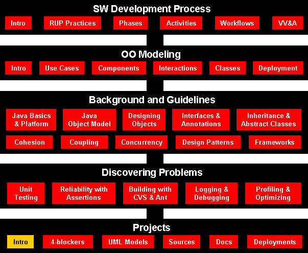
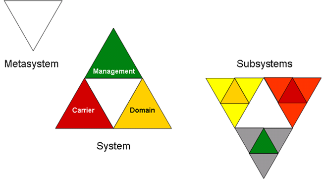
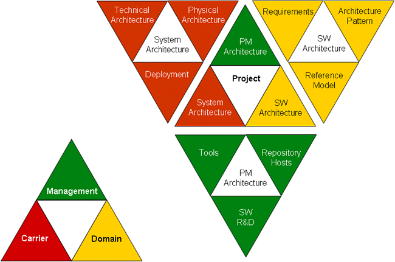
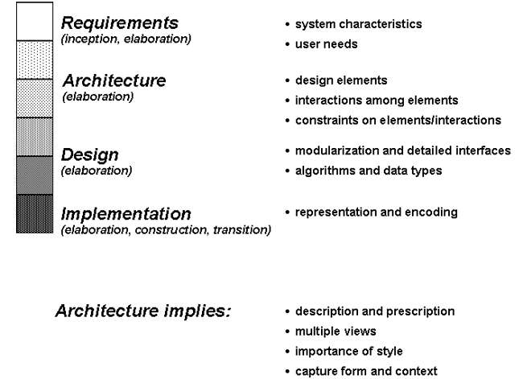
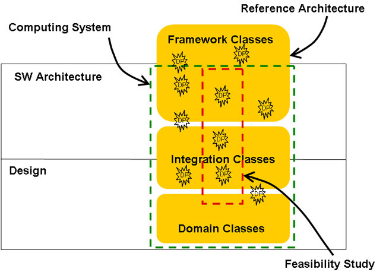
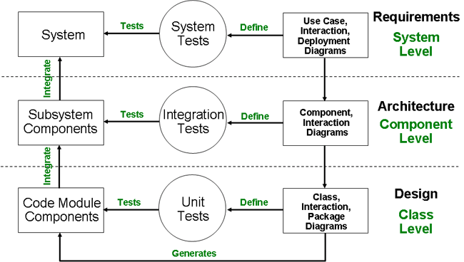
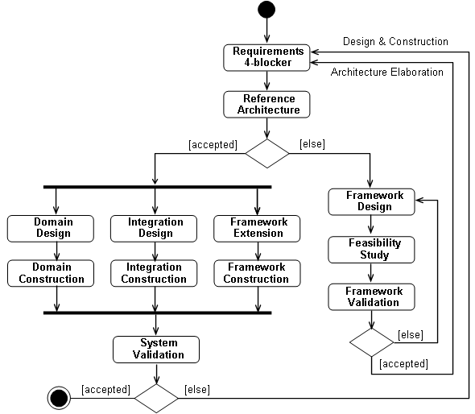
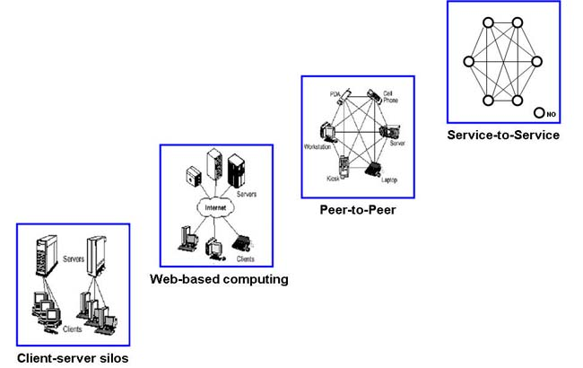
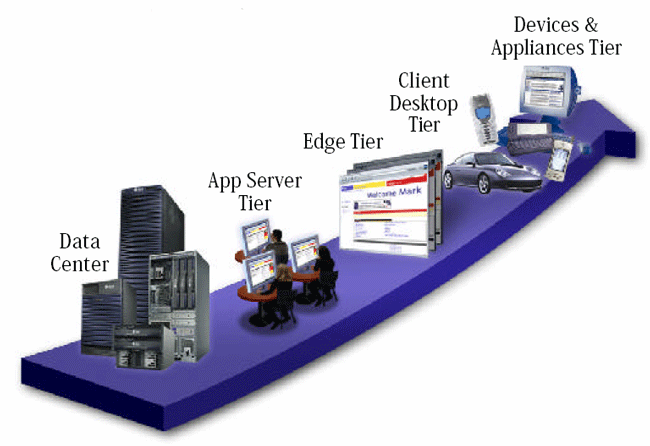
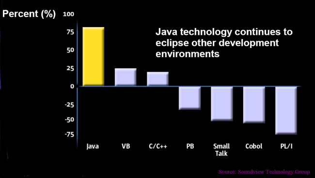

Software Engineering
Project Management
Course Map

Agenda
CS3365 Project Development and Milestones
- You work as a creative SW development team
- Lifecycle Objectives - at least: extended 4-blocker
- Lifecycle Architecture - at least: Use case diagrams, component
diagrams, interactions diagrams, prototype (at least storyboard)
- Initial Operational Capability - at least: operational SW system and
javadoc documentation
- Product Release - at least: final presentation and demo
Project Metasystemic (MDC) Approach
- Management
judicious use of means to accomplish an end
- Domain
an area over which
power is exercised
- Carrier
resources for accomplishing something

Metasystemic approach

Project and Architecture Views
Common MDC Models
Spirit
Mind
Body
Semantics
Syntax
Alphabet
Management
Values
Resources (Equipment, People, Buildings)
Process (Design, Manufacturing, Disposal)
Product
Organization (Virtual)
Control Strategy
Data
Operations
OS
Programs (Executable Codes)
HW
Source Code
Binary Code
Runtime (Platform)
SW Management
Computer Science
SW Engineering
Project Management Process (When)
Project Requirements (Why)
Project Management Team (Who)
SW Development Process (How)
SW Development
Problem (What)
SW Development Team (Who)
4-blocker is
your abstract of
Project Management and
SW Development
Proposal Document of System
Context of Architecture

Popular Definitions of Architecture
- Organizational
- Functional - Mission tasks (subtasks) to be done
- Logical - Communications links between functions areas
- Physical - Resources used to execute functions
- System
- Components - Major elements of system
- Connections - Links between components
- Constraints - Environment & behavior bounds
- Software
- Components - Major SW design relevant structures
- Connections - Data and control flow mechanisms
- Constraints - Performance, construction rules and resources
Module, Classifier, Component, Part
- Module - a separate and distinct unit of a process, system, or
subject area that may be used as a conceptual component of a model or a part
in a system.
Software Module - a unit of software storage and manipulation. Software
modules include source code modules, binary code modules, and executable
code modules.
- Classifier - a collection of instances that have something in
common. A classifier can have features that characterize its instances.
Classifiers include interfaces, classes, data types, and components.
- Component - a modular part of a system that encapsulates its
contents and whose manifestation is replaceable within its environment. A
component defines its behavior in terms of provided and required interfaces.
As such, a component serves as a type, whose conformance is defined by these
provided and required interfaces (encompassing both their static as well as
dynamic semantics).
- Part - an element representing a set of instances that are owned
by a containing classifier instance or role of a classifier. (See role.)
Parts may be joined by attached connectors and specify configurations of
linked instances to be created within an instance of the containing
classifier.
- Role - the named set of features defined over a collection of
entities participating in a particular context. Collaboration: The
named set of behaviors possessed by a class or part participating in a
particular context. Part: a subset of a particular class which
exhibits a subset of features possessed by the class. Associations: A
synonym for association end often referring to a subset of classifier
instances that are participating in the association.
Software Architectural Patterns
- Data Flow Systems
- Batch Sequential
- Pipes and Filters
- Call and Return Systems
- Main Program and Subroutines
- Hierarchical Layers
- Object-Oriented Systems
- Independent Components
- Communicating Processes
- Event Systems
- Service-oriented
- Data-Centered Systems
- Transactional Database Systems (Repository)
- Blackboards
- Space-based (Tuple Spaces, JavaSpaces)
- Virtual Machines
- Rule-Based Systems
- Interpreters
- JIT/HotSpot compilers
- Course website
http://3365.cs.ttu.edu - NFS file system
(/sp on explorer.cs.ttu.edu)
- Project directories (NFS mounts)
/sp/d1, ..., /sp/d8
available via Samba as
\\spring.cs.ttu.edu\spd1, .... ,
\\spring.cs.ttu.edu\spd8
- Project mounts on: banana.cs.ttu.edu,
chinaberry.cs.ttu.edu, dogwood.cs.ttu.edu, ficus.cs.ttu.edu,
hickory.cs.ttu.edu, juniper.cs.ttu.edu, mulberry.cs.ttu.edu,
olive.cs.ttu.edu, peach.cs.ttu.edu, sycamore.cs.ttu.edu
- Project servers and Web sites:
spd1.cs.ttu.edu, ..., spd8.cs.ttu.edu
- Project Website directories:
/sp/d1/public_html, ..., /sp/d8/public_html
- Project UML models:
/sp/d1/models, ..., /sp/d8/models
- Project repository:
/sp/d1/cvs, ... ,/sp/d8/cvs
- Workspaces:
/sp/d1/workspace, ... ,/sp/d8/workspace
-
Project compute nodes + your laptops and your home hosts running Uinx/Linux/Mac/Windows
PMA - SW Research and Development - From Programming to Architecture
- Proposal -> 4-blocker
- Project Environment
- Project Website (http://spd1.cs.ttu.edu, ...,
http://spd8.cs.ttu.edu)
- Mailing List Manager (Mailman) - email archive
- CVS/SVN repository
- Nightly build system
- Bug-tracking system - Bugzilla
- Architecture (UML)
- Design (UML)
- Implementation (PMA Tools)
- VV&A - Progress evaluations and demos
Items above in bold are mandatory
Class Model vs. Architecture and Design

- Architecture
- Gain understanding and manage system complexity
- Determine the architecture (modularization)
- Use and contribute to the framework
- Apply design patterns
- Design individual components, parts (runtime)
- Design
- Design interfaces and classes
- Apply design patterns
- Reduce many-to-many associations
- Design packages (compile-time)
- Construction
- Implement interfaces and classes
- Test against use cases, state, and component models
UML Modeling in System Development

Architecture-based R&D

Does Not Compute
Evolution of Distributed Computing Models

Why Java?
End-to-End Computing

Java™ Technology Leads the Way…
New application development by language ( Soundview TG, 2001)
